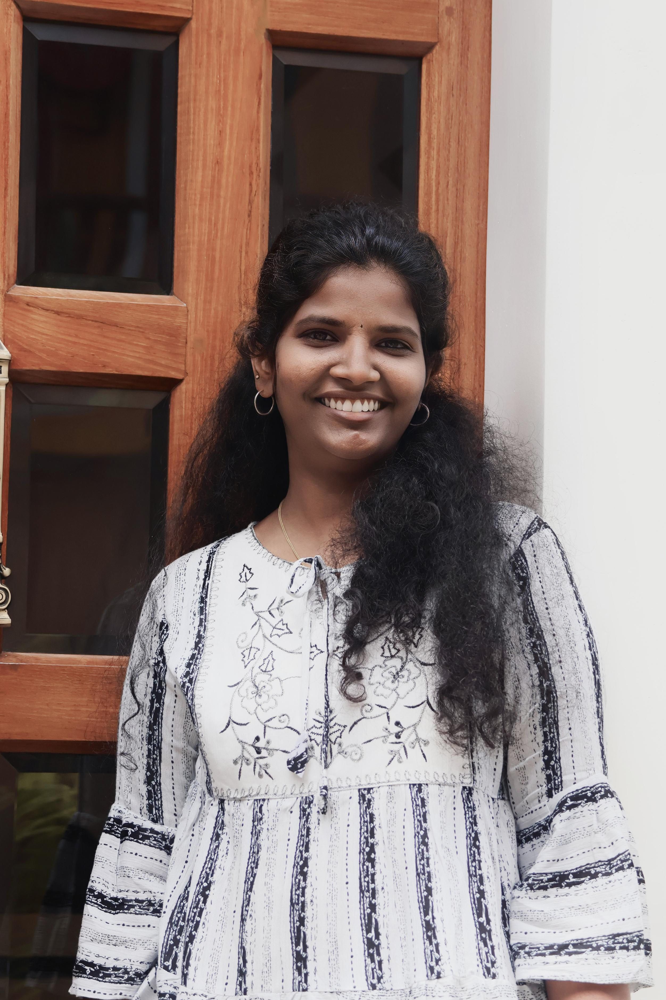

Name : Saranya M
Email : saranyamayak@gmail.com
Mobile: +91 6374328162

Objective :
To secure a challenging position in a reputable organization to expand my learnings, knowledge and skills. To secure a responsible career oppurtunity to fully utilize my training and skills, while making a significant contribution to the success of the company.
Education :
B.E-Electronics and Communication Engineering.
Dr.Mahalingam college of Engineering and Technology, pollachi, Tamil Nadu
Higher Secondary School-State Board.
Noble Matriculation Higher secondary School, virudhunagar, Tamil Nadu
passed in 2018 with 80.41%
Secondary School-State Board.
Noble Matriculation Higher secondary School, virudhunagar, Tamil Nadu
passed in 2016 with 95.8%
Work Experience :
Joined as Assistant system Engineer - trainee in TATA Consultancy Services : 2022-2023
And promoted as Assistant System Engineer (TCS) : 2023-2024
Currently pursuing my career as system Engineer (TCS) - present
Skills :
Programming Languages - SQL, PL-SQL
MarkUp Languages - HTML, CSS
Frontend programming language : JavaScript
Cloud based: Microsoft Azure
Awards/Certifications :
I have completed Azure certications : AZ-900 and AZ-104
I have pursued MongoDB SI associate cerification
Hobbies :
I love playing Handball, football, throwball.
Reading Books
Co-Curricular Activities :
Attended a workshop on "Industry 4.O"
Attended a workshop on "Artificial Intelligence in Neuroscience"
Declaration :
I hereby declare that the above information is true to the best of my knowledge.
Date:
Place: Chennai
Signature: Saranya M